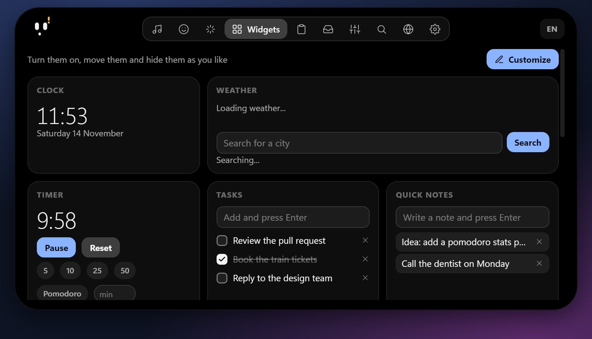
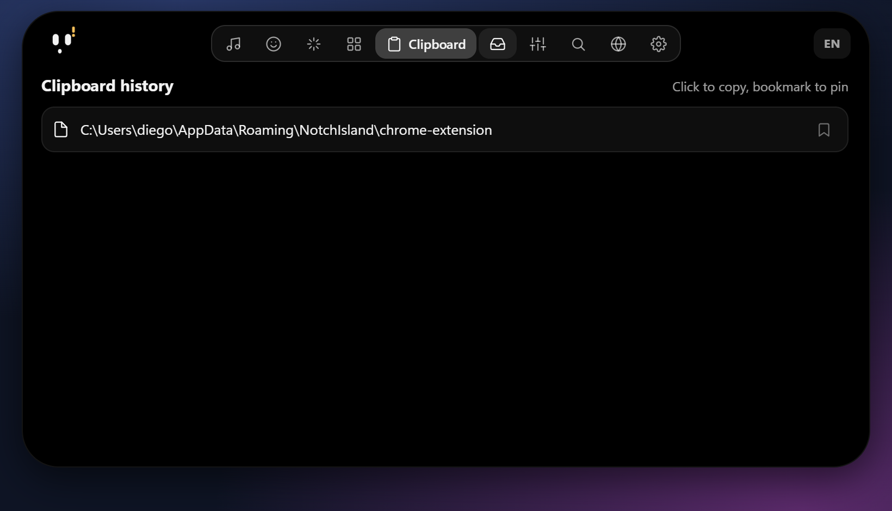
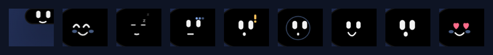

01
SPEAK. IT UNDERSTANDS.
An assistant that can actually get things done.
Open apps, adjust volume and brightness, create timers, notes and reminders. When a request gets more complex, it hands the work to Claude Code.

A DYNAMIC ISLAND FOR WINDOWS
A small intelligent space that listens, reacts and shows you what matters. Music, voice, Claude Code and controls — always one gesture away.
Windows 10/11 · Open source · No account required
TRY IT — HOVER OVER THE ISLAND
NOT ANOTHER WIDGET
NotchIsland stays out of the way until you need it. Then it opens into a fluid control center that brings your work, music and system together.
SPEAK. IT UNDERSTANDS.
Open apps, adjust volume and brightness, create timers, notes and reminders. When a request gets more complex, it hands the work to Claude Code.
CLAUDE, AT A GLANCE
Follow sessions in real time: working, waiting or complete. Get notified and jump back into the code without losing the thread.

YOUR SPACE
Weather, calendar, system stats, tasks, notes, calculator and more. Choose what you see and drag every element exactly where you want it.

IT HAS A PERSONALITY

Its eyes follow your cursor. The face smiles with music, thinks with Claude, listens while you speak and alerts you when something needs your attention.
PRIVATE BY DESIGN
Speech recognition runs locally through whisper.cpp. Notes, tasks, reminders and settings stay on your device. Integrations communicate through a token-protected hub limited to 127.0.0.1.
Read all the technical details ↗READY WHEN YOU ARE
Custom installer · Per-user installation · MIT license